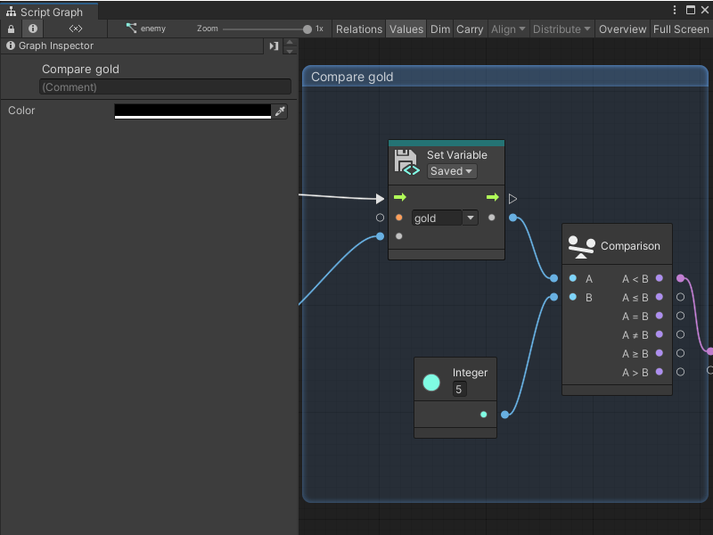

Create node groups¶
You can organize the nodes in your Script Graphs and State Graphs with node groups.

Create a new group¶
To create a new group:
Open the graph where you want to create a new group.
In an empty area of the Graph Editor, Ctrl+click (macOS: Cmd+click) and drag to create a selection.
Release the mouse to create the group.
After you create a group, you can:
Change a group name¶
To change the name of the group in your graph:
In the group header, click Group.
Enter a new name for the group.
Press Enter to save your changes.
Add a comment to a group¶
To add a comment to a group in a graph:
Select the group where you want to add a comment.
Open the Graph Inspector.
In the (Comment) field in the Graph Inspector, enter comments or information about the group.
[!NOTE] Group comments are only visible in the Graph Inspector.
Change the color of a group¶
To change the color of a group in a graph:
Select the group you want to edit.
Open the Graph Inspector.
In the Graph Inspector, select the Color field.
Select a new color for your group through one of the following methods:
Use the color picker.
Use the sliders or RGBA value fields.
Enter a hexadecimal color value.
Select the eyedropper icon and select a color from anywhere on your screen.
Resize a group¶
To resize a group in a graph:
Click and drag from any edge or corner on the group.
Move a group¶
To move a group and its nodes:
Click and drag the group’s header to a new location in the Graph Editor.
[!NOTE] You can also move a group without moving any of the nodes inside, but the required input changes based on your chosen control scheme. For more information, see Choose a control scheme
Next steps¶
After you’ve created a node group, you can add nodes to your Script Graph, create and add variables, or add a Subgraph.